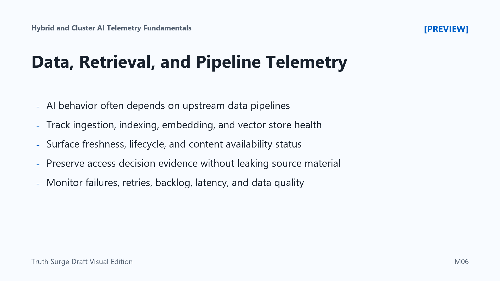

Data, Retrieval, and Pipeline Telemetry
Connecting to LMS... Progress: in progress

Narration
Many AI systems depend on data pipelines before inference ever happens. A model-serving issue may actually begin with a failed ingestion job, a delayed index update, stale content, missing embeddings, or a retrieval source that is unavailable. Data and retrieval telemetry helps teams avoid treating every output problem as a model problem.
Retrieval-augmented systems need evidence about ingestion status, document processing, indexing success, embedding job progress, vector database health, retrieval latency, and result availability. Teams also need to know which index, corpus, data source, or content version participated in a request. That context makes it possible to connect user-facing behavior to the underlying knowledge source.
Freshness and lifecycle status matter. If content is stale, deprecated, partially indexed, or waiting on approval, the system may return less reliable results while all infrastructure dashboards look healthy. Telemetry should surface when data moved, when it was validated, when it became available for retrieval, and when it should no longer be used.
Permission-aware retrieval adds another requirement. Teams need evidence that access decisions were made, but logs should not expose protected document contents or sensitive source material. Batch jobs and streaming pipelines also need failure counts, retry behavior, backlog size, processing latency, and data quality indicators. Pipeline telemetry helps teams separate model behavior from data availability, indexing, retrieval, and governance issues.